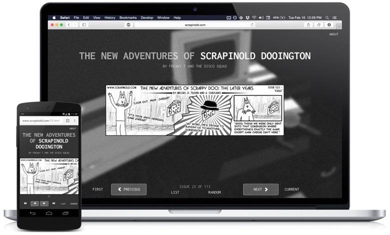
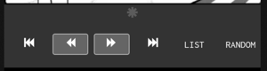
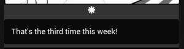
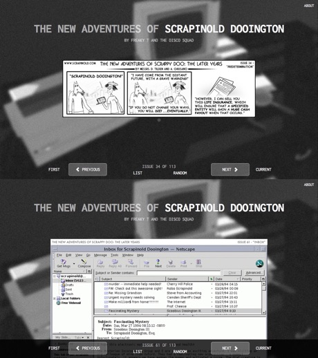
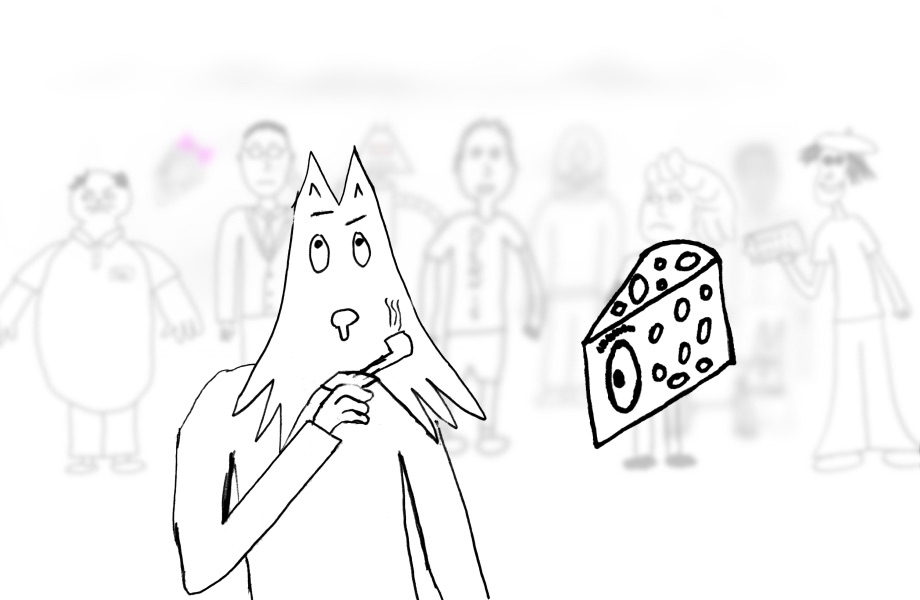

Fully Responsive

Scrapinold scales to fit the device you're using in ways that other webcomics don't.

⬇

Many webcomics include special text captions that appear when hovering the mouse over
an image (alt-text), but few offer the ability to read it on mobile devices.
Using standard CSS media queries, Scrapinold displays alt-text on mobiles in a subtle yet
discoverable way.

Designed for Binge-Reading
The comic's navigation buttons never move, regardless of the length of the comic. Unlike most other comics, this
is done without introducing a redundant set buttons.
A random-comic function built using Jekyll allows for quick discovery.

A Surreal Journey
A collaboration between "The Disco Squad" and myself, the comic follows the
inexplicable adventures of the world-renowned detective Scrapinold Dooington alongside a bizzare cast of characters.